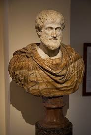
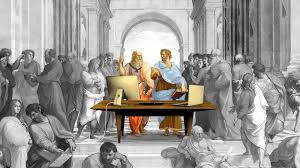

O que é Filosofia Política?
A Filosofia Política é o ramo da filosofia que estuda as questões relativas ao poder, ao Estado, à justiça, à liberdade e à organização da sociedade.
Principais Temas da Filosofia Política:
- Estado: análise da origem, finalidade e legitimidade do poder estatal.
- Justiça: reflexão sobre o que é justo na organização social e na distribuição de bens.
- Liberdade e Igualdade: discussão sobre direitos individuais, coletivos e suas limitações.
- Democracia e Autoritarismo: estudo das formas de governo e sua relação com o povo.
Principais Autores:
- Platão: idealizou a República e discutiu a justiça e o papel dos governantes.
- Aristóteles: analisou diferentes formas de governo e a importância da ética na política.
- John Locke: defendia direitos naturais e o governo como contrato social.
- Karl Marx: criticou as desigualdades sociais e a luta de classes.
“O homem é por natureza um animal político.” – Aristóteles